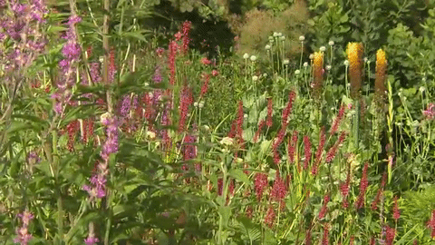

Monet’s Garden

In the village of Giverny, France, Monet’s garden is a sanctuary that inspired the paintings of Claude Monet. Monet's garden helped him determine the subjects of his paintings, as he drew inspiration from the pond and surrounding flowers in his impressionist works. Common nature-related themes from Monet’s garden became a recurring motif throughout all of his works.
The garden is divided into the Clos Normand flower garden and the Japanese water garden. The Clos Normand consists of flowers arranged in a formal manner, while the Japanese water garden consists of lilies and a water bridge that inspired a lot of Monet’s water related works.
Photo Gallery